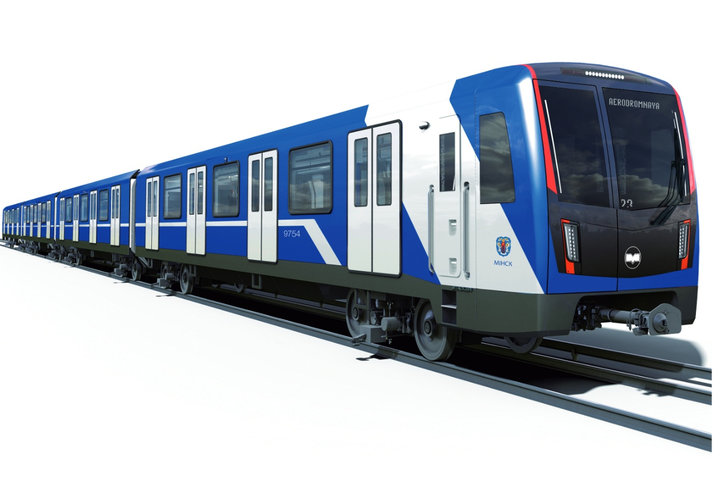

| Схема | Достопримечательности | Полезные ссылки | Их именами названы улицы | Отзыв о поездке |
|
Каменная горка
Кунцевщина
Спортивная
Пушкинская
Молодёжная
Фрунзенская
Немига
Купаловская
Первомайская
Пролетарская
Тракторный завод
Партизанская
Автозаводская
Могилёвская
Юбилейная площадь
Площадь Франтишка Богушевича Вокзальная Ковальская Слобода Аэродромная Неморшанский Сад Слуцкий Гостинец Малиновка Петровщина Михалово Грушевка Институт культуры Площадь Ленина Октябрьская Площадь Победы Площадь Якуба Коласа Академия наук Парк Челюскинцев Московская Восток Борисовский тракт Уручье |
Добро пожаловать в Минск!Очень рад видеть вас на моём сайте, посвящённом лучшему на свете городу - Минску! Я очень люблю это место, поэтому решил сделать сайт, посвященный ему. Нажимая на станции метро, вы получите дополнительную информацию о каждой станции, а также о районе, где они расположены.
 |